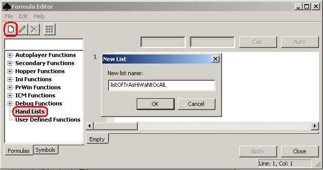

Handlist Editor
OpenHoldem supports hand-lists, mainly for preflop decisions. Creating a new handlist works basically the same way like creating a new formula. Select the category “Hand Lists”, then press the button with the blank sheet and a dialog will pop up that asks you for the name of your list. All names are allowed as long as they start with the prefix “list”. Choose a name, press “OK” and the list has been created; empty for the moment.

To edit your newly created list select it in the tree-view and click the matrix-button in the toolbar. A dialog will pop up that allows you to choose the hands in the lists. Pairs are at the main diagonal, Suited hands above and offsuited hands below.